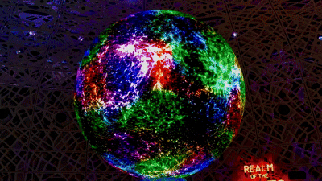
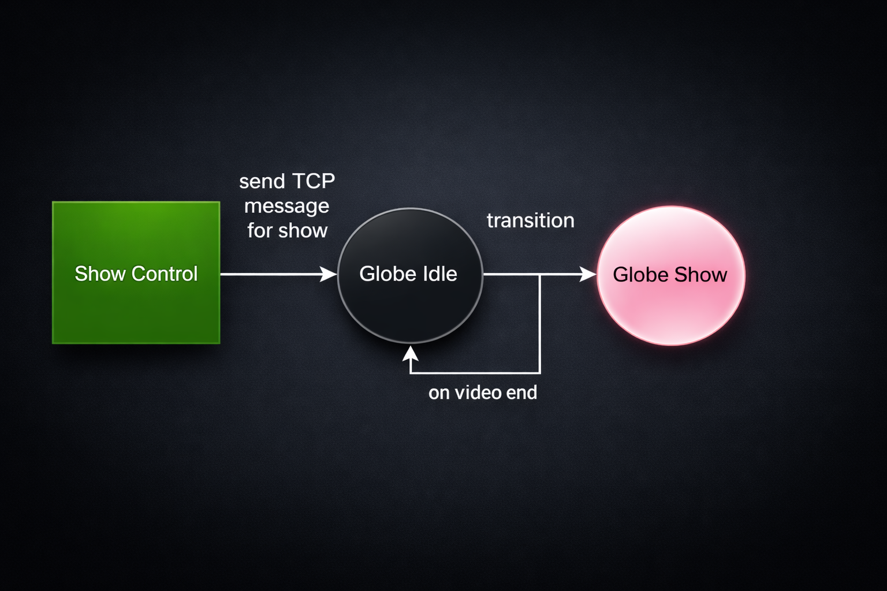

Mandai Exploria
Entrance Globe Interactive System
Mandai Exploria is an indoor, nature-themed edutainment attraction at the Mandai Wildlife Reserve that lets visitors explore real-world natural phenomena and ecosystems through immersive and interactive digital experiences. The Entrance Globe (a centre-piece installation) is a large-scale LED installation that visualises real-time visitor activity across the gallery as a living neural network.
Elnathan is the lead developer behind the robust Unity Engine system powering the globe’s behaviour, translating cross-world interaction signals into dynamic colour activations across an interconnected neuron scene, and architecting the state-driven control system that manages both live activity states and scheduled Light Show and Disruption sequences.

Idle State

Color Change

Show Mode Change
In the Idle state, the globe’s neurons remain white when no activity is detected; as engagement increases within Exploria, colours progressively emerge based on live activity levels. Every alternate hour, the system transitions seamlessly into programmed show moments—including a thematic Light Show that showcases Exploria’s core zones and a Disruption sequence that simulates a full gallery glitch event—before returning deterministically to the live interactive state. All show states and activity levels are driven via a TCP messaging system, enabling remote triggering, operational control, and reliable real-time responsiveness in a live public environment.
TCP–Driven Show Control
& Activity Visualizer

The Globe system operates on a state-driven TCP protocol pipeline with two parallel data paths: a discrete show trigger command and a continuous activity-level data stream. By default, the system runs in Globe Idle, rendering ambient visuals while listening for incoming TCP messages and applying real-time activity data to modulate behaviour. When Show Control sends a show trigger command, the system transitions deterministically from Idle to Globe Show, where the designated show sequence plays without interference from activity updates.
Upon video completion, an internal end event automatically returns the system to Idle, ensuring a stable fallback state without requiring an external reset. This architecture ensures clean state transitions, reliable playback control, and continuous data-driven interactivity within the ambient mode.